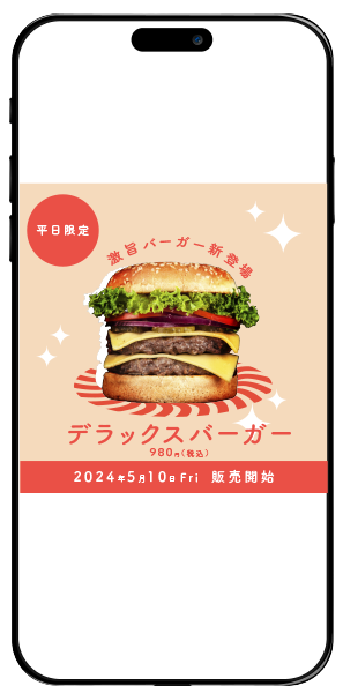

A案

B案
A案
B案
ハンバーガーを斜めに配置することで、動きとインパクトを出し、視線を引き付けるよう工夫しました。商品名である「デラックスバーガー」を最も目立つように配置し、価格とのバランスもとりながら、情報の優先度を意識して設計しました。全体のフォントは丸ゴシックを使用し、柔らかさと親しみやすさを演出しています。一方で、文字の装飾や情報パーツには細いラインを用い、ポップさに上品さや抜け感を加えることで、女子大生のランチタイムを意識した”ちょっとおしゃれ”な雰囲気を目指しました。背景には明るいオレンジを採用し、明るく楽しい印象と、食欲をそそる色味で構成しています。
とにかく「かわいさ」を前面に出すことを意識して制作しました。ハンバーガーの下に配置した赤い渦巻きのモチーフは、ワクワク感と目を引くリズムを与えるために加えました。フォントには丸ゴシック体を使用し、全体の印象をやわらかくポップにまとめています。また、ハンバーガーの輪郭に白のドロップシャドウを入れることで、背景から浮き立たせ、立体感を演出しました。配色についても、キュートで甘すぎないかわいらしさを意識し統一感を出しました。結果として、「めっちゃかわいい！」と感じてもらえるような、女の子の”好き”をぎゅっと詰め込んだデザインになったと思います。
ご相談・ご依頼お待ちしております。
揺れを大切にする感性と、親身に寄り添う力が強みです。無料でご相談・お見積りいたします。
お問合せフォームはこちら
この場所から、
あなたの世界が
ひらきますように。

［ターゲット］
授業の合間に友人とランチを楽しむ、２０代前半の女子大学生。
［目的］
新作ハンバーガーの宣伝
[制作期間・範囲］
１日/デザイン
［使用ツール］
illustrator/Photoshop